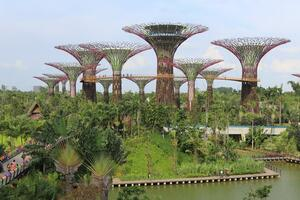
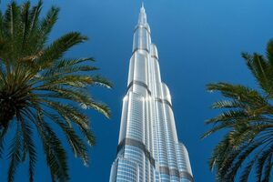
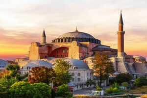
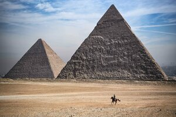

I have traveled to a plethora of locations around the globe. On this page, I will list a couple of the locations I've been to and write a few comments about each one.
Singapore is one of the best places i've ever been to. It's quite wealthy and it is not unusual to see supercars often. Singapore has an amazing downtown city area with architecutre live i've nevr seen.
The best part about Singapore are the super trees. They are definitely super and are completely solar-powered. At night there is a show you can attend where they all place music synchronously.
Dubai is an amazing place to go to as it is completely modern and brand new. The UAE in of itself is less than 100 years old, so it is no surprise that everything is very clean when you walk around even in the busiest areas
What's most amazing about dubai is it's safety. The UAE is known for it's outlandishly low crime rate, and people often tell stories how they have left their house doors open or left their wallets in the mall for days and nothing happens
Dubai is also home to amazing architectual feats. This includes the tallest building, biggest mall, and biggest airport.
I almost see Dubai as a World Center of sorts, something always seems to be going on around you.
Turkey is my favorite country to visit in terms of it's history.
The religious history of turkey is vast and rich, with multiple religious parties coming and going throughout years of battle.
This is the reason in architectual sites such as the Hagia Sophia, you can see the mix of Islam and Christianity. One wall will have a mural of Jesus, while the other next to it will say Allah. It shows how history has changed the purpose of the building throughout the years.
Turkey also has many amazing cities, with the most known being Istanbul for it's sites such as the Hagia Sophia or the Blue Mosque. However, many don't know about Cappadocia.
In Cappadocia my family and I slept in a renovated cave hotel in a mountain. The city has strange rock formations poking vertically out of the ground. It is also home to Air Balloon shows which take place often and make for beautifal pictures.
Egypt is another country that is full of rich history.
Visiting the Pyramids and Sphinx met my expectations, and I was amazed.
What I highly reccomend is to go into the tombs, though it costs extra, it is definitely worth it as you get to go inside the Pyramid and see the actual reason the Egyptians built these huge structures
Egypt also has great Bazaars to go to for purchasing Rugs, Tea sets, and an assortment of other souveniers.
